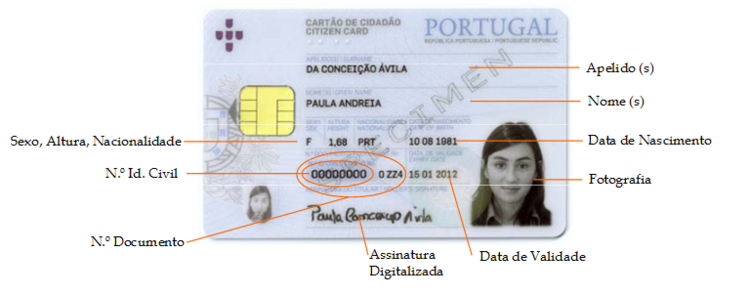
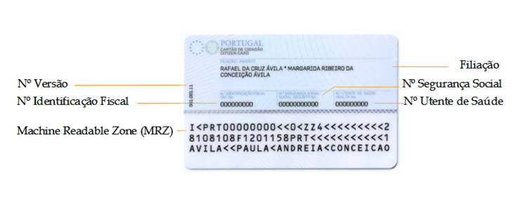

Vice-Consulado de Portugal em Porto Alegre
Serviços Consulares

Vice-Consulado de Portugal em Porto Alegre
Serviços Consulares
As informações abaixo não servem para o serviço de pedido de visto, que deveram ser agendados obrigatóriamente e para os residentes deste estado.
O Vice-Consulado de Portugal em Porto Alegre atende as pessoas residentes no Estado da sua área de jurisdição: Rio Grande do Sul. Para efectuar qualquer acto consular o utente deverá comprovar que reside na área de jurisdição do Vice-Consulado, apresentando p. ex. um recibo e luz, telefonia, banco, ou se for estudante, comprovativo de inscrição/matricula escolar, SUS, ...
Pessoas residentes noutros Estados do Brasil só poderão ser atendidas neste Vice-Consulado em situações de comprovada excepcionalidade ou urgência, sujeitas a sistema de senhas (distribuídas, em número reduzido, às 09h00) e só serão atendidos após o Vice-Consulado obter autorização para o seu atendimento junto do posto consular a que pertencem e ter terminado o atendimento dos utentes pertencentes à jurisdição deste Vice-Consulado.
Com o objetivo de melhorar o atendimento ao público este Vice-Consulado passou a funcionar com agendamento prévio para atendimento ao balcão dos serviços consulares mais procurados (cartão de cidadão/passaporte/nacionalidade/casamento/óbito/vistos). Evitam-se assim filas e é garantido um atendimento mais organizado para quem procura os nossos serviços. Para os serviços com agendamento prévio NÃO VENHA AO VICE-CONSULADO SEM o seu AGENDAMENTO, salvo se for uma situação urgente.
Para os demais serviços o atendimento ao balcão é feito sem agendamento prévio, por ordem de chegada, todos os dias úteis, entre as 9H e as 12H (consulte aqui os dias que o posto se encontra encerrado).
Além disso, para a maioria dos serviços e/ou documentos está também disponível a solicitação por correio, sem necessidade de se deslocar ao Vice-Consulado e recebendo em sua casa os documentos pretendidos. Assim, antes de fazer o agendamento ou de se dirigir ao Vice-Consulado, veja quais os documentos que pode obter sem sair de sua casa.
Clicando no serviço consular pretendido, na coluna ao lado, será direcionado para a página respetiva, onde encontrará as informações que precisa para aquilo que pretende.
Note bem: Todas as informações aqui prestadas e os requisitos delas constantes são de natureza geral. A análise e as particularidades de cada caso concreto poderão determinar a exigência de documentação ou diligências complementares.
O Consulado presta esclarecimentos adicionais, em caso de dúvidas sobre algum documento ou ato que pretenda, preferencialmente através de mensagem enviada por email para mail@cnpal.dgaccp.pt.

Os portugueses residentes no estrangeiro devem proceder à sua inscrição no posto consular da área da sua residência.
A inscrição é um acto consular, pelo qual a identificação dos cidadãos nacionais fica a constar nos arquivos do posto consular em cuja área de jurisdição fixaram residência ou se encontram ocasionalmente.
A sua inscrição é um acto importante : em caso de problema, pois permite ao posto dispor dos contactos dos portugueses que residem ou transitam pela área consular.
Este acto é imprescindível para a obtenção de qualquer tipo documento que pretenda obter junto de um posto consular.
Em caso de roubo ou extravio de documentos pessoais, será possível identificar rapidamente o cidadão português.
IMPORTANTE: A inscrição consular só pode ser feita se o interessado tiver nacionalidade portuguesa.
Existem dois tipos de inscrição consular:
1) Inscrição consular definitiva: é exigida a presença da pessoa a inscrever, munida do bilhete de identidade ou cartão do cidadão válido e de duas fotografias 3 x 4 cm, actualizadas e a cores.
Os menores de 10 anos podem ser inscritos a pedido dos seus representantes legais, presentes, desde que seja exibida prova bastante de que o menor se encontra na área de jurisdição deste Vice-Consulado. Para os menores de 10 anos que não possuam bilhete de identidade, é suficiente uma certidão de nascimento ou um certificado de nacionalidade.
2) Inscrição consular provisória: quando o interessado não apresenta o bilhete de identidade ou cartão do cidadão válido, pode ser feita uma inscrição consular provisória, mediante a apresentação dos documentos de identificação que possuir, RG brasileiro, carta de condução, bilhete de identidade caducado, passaporte nacional válido ou caducado, etc.
Também poderá ser feita nos casos em que não se possa deslocar ao Vice-consulado. Para isso, basta enviar um email com pdf do seu documento de identificação e do justificativo da sua residência, assim como o seu contacto telefónico. A inscrição será confirmada quando se deslocar ao Vice-consulado.
Caso o cidadão só tenha inscrição consular provisória não poderão ser emitidos pelo Vice-consulado documentos para os quais seja necessário a apresentação de bilhete de identidade.
A inscrição consular deve ser mantida actualizada. Caso queira solicitar a alteração de endereço e/ou contacto, envie e-mail a pedir ACTUALIZAÇÃO DE INSCRIÇÃO, com nome completo, filiação, número do bilhete de identidade/cartão de cidadão, data de nascimento, endereço e telefone para
A inscrição (registo) consular é comprovada através do CERTIFICADO DE INSCRIÇÃO CONSULAR.
Diferente da simples inscrição consular, que é um documento interno do Consulado, o certificado de inscrição consular (ou cédula consular) é um documento solicitado pela Polícia Federal brasileira a alguns cidadãos portugueses para fins de documentação e registro civil.
Para obter o certificado de inscrição consular definitiva precisa dos seguintes documentos:
1. Cópia do bilhete de identidade /cartão de cidadão válido.
2. Cópia do passaporte português válido, caso esse documento seja exigido pela Polícia Federal;
3. Foto 3×4 cm colorida, recente e sem data;
4. Requerimento preenchido.
5. Comprovante de residência no Estado do Grande do Sul.
- Para os menores de 10 anos que não possuem Bilhete de Identidade ou Cartão de Cidadão, deverá ser apresentado o boletim de nascimento ou a certidão de nascimento portuguesa, válida.
Clique aqui para verificar o custo do certificado de inscrição consular.
FORMAS DE PAGAMENTO:
Dinheiro, cheque ou cartão de débito (todos os cartões, salvo Banricompras e Hipercard), ao balcão do Vice-Consulado.

O Cartão de Cidadão (CC) é o documento de identificação multifuncional dos cidadãos portugueses, em formato de smart card, com um chip de contacto integrado, que veio substituir cinco cartões de identificação atualmente existentes:
- Bilhete de Identidade,
- Cartão da Segurança Social,
- Cartão de Contribuinte,
- Cartão do Serviço Nacional de Saúde,
- Cartão de Eleitor.
O CC permite a identificação visual e presencial de forma segura dos cidadãos portugueses, bem como a identificação e autenticação eletrónica em atos informatizados, exibindo:
- Na frente, a fotografia e os elementos de identificação civil;
- No verso, os números de identificação dos diferentes organismos cujos cartões agrega e substitui, uma zona de leitura óptica e o chip de contacto, com os certificados digitais (para autenticação e assinatura eletrónica).
Quanto ao número de identificação fiscal (que equivale ao CPF brasileiro), é gerado somente quando o cidadão tem ou teve movimentação financeira em Portugal. Neste caso, alguns dias após a execução do cartão de cidadão, o requerente receberá uma carta do Ministério das Finanças português. Trata-se apenas de um protocolo, devendo o requerente, se assim o entender, indicar um representante fiscal em Portugal.
O CC é um documento com um formato mais moderno e mais atual que concentra os seus dados pessoais num único documento com uma maior segurança, porém, não há a necessidade de substituir o seu bilhete de identidade enquanto o mesmo estiver válido.
O cartão de cidadão possibilita: a autenticação electrónica do cidadão perante serviços públicos e privados; o envio de informação de identificação pessoal nos contactos com a Administrarão Pública ou em transacções autorizadas pelo cidadão; a assinatura digital de documentos, recorrendo ao certificado digital qualificado, que tem disponível, com o mesmo valor da assinatura manuscrita.
10 anos.
O CC deve ser renovado a partir de 6 meses antes de seu vencimento ou quando tenha sofrido alteração de dados pessoais do cidadão nele constantes.
- Cidadãos com nacionalidade portuguesa (A obtenção do CC é obrigatória para todos os cidadãos nacionais, residentes em Portugal ou no estrangeiro, a partir dos seis anos de idade ou logo que a sua apresentação seja exigida para o relacionamento com algum serviço público, podendo também ser efetuado se pretender substituir qualquer um dos segs cartões: BI, cartão de contribuinte, cartão de segurança social e cartão do serviço nacional de saúde).
- Cidadãos brasileiros ao abrigo do Tratado de Porto Seguro (brasileiros residentes em Portugal e beneficiários do estatuto de igualdade).
- Em Portugal, nos Serviços de Identificação Civil; nas Conservatórias do Registo Civil; nas Lojas do Cidadão ou em serviços equivalentes;
- No posto consular com jurisdição na sua área de residência (este Vice-Consulado tem jurisdição sobre o Rio Grande do Sul)
Só poderá ser dado seguimento ao pedido se forem apresentados todos os documentos necessários e cumpridos os procedimentos abaixo identificados.
Caso haja dúvidas ou dificuldades na cabal identificação do requerente o Vice-Consulado poderá ter de solicitar documentação adicional à aqui referida.
Só o estado civil e nome do requerente e/ou seus progenitores que constem do registo civil português poderão ser considerados para emissão de CC.
Tem-se verificado que muitos cidadãos portugueses residentes no estrangeiro, solicitam a emissão do CC durante as férias em Portugal. Deverão mencionar, nestes casos, que residem no estrangeiro e pedir para levantar o documento no Consulado da área onde residem.
A presença do requerente do cartão de cidadão é SEMPRE necessária (seja na 1ª vez seja nas renovações de CC) para recolha dos dados biométricos (fotografia, altura, impressões digitais e assinatura).